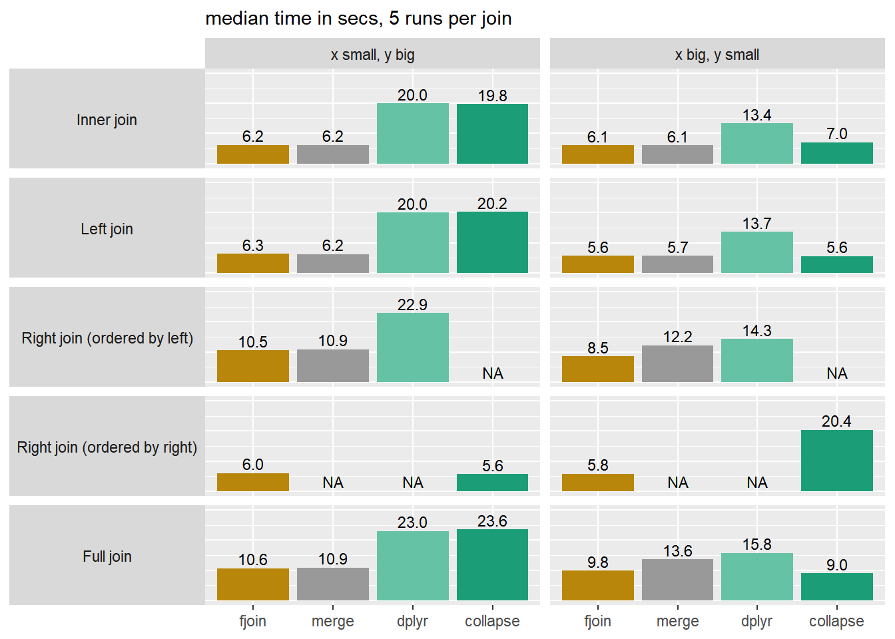

Description
fjoin builds on data.table to provide fast, flexible joins on any data frames. It slots into tidyverse pipelines and general workflows in a single line, and provides NA-safe matching by default, on-the-fly column selection, flexible row-order preservation, multiple-match handling on both sides, and an indicator column for row origin.
Installation
fjoin is currently in submission to CRAN.
Latest development version (R-universe):
install.packages("fjoin",
repos = c("https://trobx.r-universe.dev", "https://cloud.r-project.org"))Features
- Scope: Inner, left, right, full, semi-, and anti-joins with equality and inequality conditions, plus cross joins.
-
Compatibility: Accepts any mix of data frame-like objects or
lists of same-length vectors, and returns a plaindata.frame, (grouped) tibble,data.table,sf, orsf-tibble. Refreshes dynamic attributes likegroups, keys,agr, andbboxin the output. - Performance: Uses case-specific data.table solutions specially developed for high performance, and avoids data-copying at any stage for memory-efficiency.
- Transparency: “Just works” for general users, but you can also view the resulting data.table code instead of (or as well as) executing it, or run “mock” joins without data that output template code.
- Low dependency: Depends only on data.table, a mature, dependency-free package emphasising long-term stability.
fjoin provides several distinctive options and controls, including:
-
NA-safe joins by default: Missing values are treated sensibly (no matches on
NAunless overridden withmatch.na). -
On-the-fly column selection: Choose and order columns with
selectfor efficient one-liners. -
Row origin tagging: Add a Stata-style marker column showing each row’s source with
indicate. -
Multiple-match handling on both sides: Arguments
mult.xandmult.yspecify how to handle multiple matches on either or both sides of the join, including in semi- and anti-joins. -
Flexible order: Control which data frame’s row order is preserved in the result (without expensive sorting) using
order.
API
fjoin_* functions( x/y style) |
dtjoin_* functions(extended DT[i] style) |
|---|---|
fjoin_inner(), fjoin_left(), fjoin_right(),fjoin_full()
|
dtjoin() |
fjoin_left_semi (alias fjoin_semi), fjoin_right_semi()
|
dtjoin_semi() |
fjoin_left_anti (alias fjoin_anti), fjoin_right_anti()
|
dtjoin_anti() |
fjoin_cross() |
dtjoin_cross() |
The fjoin_* family consists of conventional left/right-style join functions. They are wrappers around the dtjoin_* functions (also exported), which use a generalisation of data.table’s DT[i] join syntax, and which write the join code and handle execution.
Examples
Example 1: Basic use and options
Plain data frames joined by simple equality, using fjoin_full() for illustration.
dfP <- read_df("
id item price other_cols
NA apples 10 ...
3 bananas 20 ...
2 cherries 30 ...
1 dates 40 ...
")
dfQ <- read_df("
id quantity notes other_cols
2 5 '' ...
1 6 '' ...
3 7 '' ...
NA 8 'oranges (not listed)' ...
")(1) Basic syntax
fjoin_full(dfQ, dfP, on = "id") id quantity notes other_cols item price R.other_cols
1 2 5 ... cherries 30 ...
2 1 6 ... dates 40 ...
3 3 7 ... bananas 20 ...
4 NA 8 oranges (not listed) ... <NA> NA <NA>
5 NA NA <NA> <NA> apples 10 ...The default match.na = FALSE prevents apples-and-oranges matches on missing values — other frameworks would join the last two rows.
(2) Efficient selective joins in one line
Use select to restrict the join to particular columns:
fjoin_full(dfQ, dfP, on = "id", select = c("item", "price", "quantity")) id item price quantity
1 2 cherries 30 5
2 1 dates 40 6
3 3 bananas 20 7
4 NA <NA> NA 8
5 NA apples 10 NAThis is a lot easier to write and read than the equivalent operation in dplyr (where the first two lines avoid inflating the size of the join with irrelevant columns):
x <- dfQ |> select(id, quantity)
y <- dfP |> select(id, item, price)
full_join(x, y, join_by(id), na.matches = "never") |>
select(id, item, price, quantity)(3) Indicator column for row origin
1L: left only, 2L: right only, 3L: joined from both. In Stata since 1984!1
fjoin_full(
dfQ,
dfP,
on = "id",
select = c("item", "price", "quantity"),
indicate = TRUE
) .join id item price quantity
1 3 2 cherries 30 5
2 3 1 dates 40 6
3 3 3 bananas 20 7
4 1 NA <NA> NA 8
5 2 NA apples 10 NA(4) Switch row order from left-then-right to right-then-left
fjoin_full(
dfQ,
dfP,
on = "id",
select = c("item", "price", "quantity"),
indicate = TRUE,
order = "right"
) .join id item price quantity
1 2 NA apples 10 NA
2 3 3 bananas 20 7
3 3 2 cherries 30 5
4 3 1 dates 40 6
5 1 NA <NA> NA 8(5) Display code instead of executing
For data.table users.
fjoin_full(
dfQ,
dfP,
on = "id",
select = c("item", "price", "quantity"),
indicate = TRUE,
order = "right",
do = FALSE
).DT : x = dfQ (cast as data.table)
.i : y = dfP (cast as data.table)
Join: setDF(with(list(fjoin.temp = setDT(.DT[, fjoin.which.DT := .I][, na.omit(.SD, cols = "id"), .SDcols = c("id", "quantity", "fjoin.which.DT")][, fjoin.ind.DT := TRUE][.i, on = "id", data.frame(.join = fifelse(is.na(fjoin.ind.DT), 2L, 3L), id, item, price, quantity, fjoin.which.DT), allow.cartesian = TRUE])), rbind(fjoin.temp, setDT(.DT[!fjoin.temp$fjoin.which.DT, data.frame(id, quantity, fjoin.which.DT, .join = rep(1L, .N))]), fill = TRUE))[, fjoin.which.DT := NULL])[]Example 2: Reducing an inequality join from M:M to 1:1 with mult.x and mult.y
data.table (mult) and dplyr (multiple) can reduce the cardinality on one side of the join from many ("all") to one ("first" or "last"). fjoin (mult.x, mult.y) will do this on either side of the join, or on both sides at the same time. This example (using fjoin_left()) shows an application to temporally ordered data frames of generic “events” and “reactions”.
events <- read_df("
event_id event_ts
1 10
2 20
3 40
")
reactions <- read_df("
reaction_id reaction_ts
1 30
2 50
3 60
")(1) For each event, all subsequent reactions (M:M)
fjoin_left(
events,
reactions,
on = c("event_ts < reaction_ts")
) event_id event_ts reaction_id reaction_ts
1 1 10 1 30
2 1 10 2 50
3 1 10 3 60
4 2 20 1 30
5 2 20 2 50
6 2 20 3 60
7 3 40 2 50
8 3 40 3 60(2) For each event, the next reaction (1:M)
Equivalent to a one-way forward rolling join.
fjoin_left(
events,
reactions,
on = c("event_ts < reaction_ts"),
mult.x = "first"
) event_id event_ts reaction_id reaction_ts
1 1 10 1 30
2 2 20 1 30
3 3 40 2 50(3) For each event, the next reaction, provided there was no intervening event (1:1)
Equivalent to a two-way rolling join (mutual forward/backward rolling matches).
fjoin_left(
events,
reactions,
on = c("event_ts < reaction_ts"),
mult.x = "first",
mult.y = "last"
) event_id event_ts reaction_id reaction_ts
1 1 10 NA NA
2 2 20 1 30
3 3 40 2 50Example 3: Chain of calls from fjoin_* to dtjoin_* to data.table
A technical illustration showing:
- two calls to
fjoin_left()(commented out), differing in theorderargument - the resulting calls to
dtjoin(), with the addition ofshow = TRUE - the generated data.table code and its output
df_x <- read_df("
id_x row_x
1 x1
2 x2
3 x3
")
df_y <- read_df("
id_y row_y
4 y1
4 y2
3 y3
3 y4
2 y5
2 y6
")
# (1) fjoin_left(df_x, df_y, on = "id_x == id_y", mult.x = "first")
dtjoin(
df_y,
df_x,
on = "id_y == id_x",
mult = "first",
i.home = TRUE,
prefix = "R.",
show = TRUE
).DT : df_y (cast as data.table)
.i : df_x (cast as data.table)
Join: .DT[.i, on = "id_y == id_x", mult = "first", data.frame(id_x, row_x, row_y)] id_x row_x row_y
1 1 x1 <NA>
2 2 x2 y5
3 3 x3 y3
# (2) fjoin_left(df_x, df_y, on = "id_x == id_y", mult.x = "first", order = "right")
dtjoin(
df_x,
df_y,
on = "id_x == id_y",
mult.DT = "first",
nomatch = NULL,
nomatch.DT = NA,
prefix = "R.",
show = TRUE
).DT : df_x (cast as data.table)
.i : df_y (cast as data.table)
Join: setDF(with(list(fjoin.temp = setDT(setDT(.i[, fjoin.which.i := .I][.DT[, fjoin.which.DT := .I], on = "id_y == id_x", nomatch = NULL, mult = "first", data.frame(id_x = i.id_x, row_x = i.row_x, fjoin.which.DT = i.fjoin.which.DT, fjoin.which.i)])[.i, on = "fjoin.which.i", nomatch = NULL, data.frame(id_x = id_y, row_x, fjoin.which.DT, row_y)])), rbind(fjoin.temp, setDT(.DT[!fjoin.temp$fjoin.which.DT, data.frame(id_x, row_x, fjoin.which.DT)]), fill = TRUE))[, fjoin.which.DT := NULL])[] id_x row_x row_y
1 3 x3 y3
2 2 x2 y5
3 1 x1 <NA>The difference in the order argument passed to fjoin_*() is reflected at dtjoin() level in the identity of the tables passed to .DT and .i, the values of the extended arguments nomatch.DT and mult.DT (counterparts to the familiar data.table arguments nomatch and mult on the other side of the join), and a compensating argument i.home which toggles the “home” and “foreign” table for the purposes of column order and prefixing (as well as for indicate and output class). dtjoin() in turn translates these specifications into data.table code for execution. See the dtjoin() documentation for full details of this extended DT[i]-style syntax.
Performance

The benchmark above is based on a no-frills equality join to allow comparison with merge.data.table and collapse::join(); see the Performance article for more detail. In the inner and left joins, fjoin and merge.data.table reflect a simple operation in data.table, and straightforwardly inherit its speed and robustness to the order of the tables. But fjoin performs a bit better than merge.data.table on the right and full joins. This is typical: fjoin’s solutions for join types and additional options that are not straightforward in native data.table have been developed with close attention to performance.
Notes for tidyverse users
fjoin is a drop-in alternative to dplyr::*_join() with fast large data performance and useful options that dplyr::*_join() lacks (though the reverse is also true — see below). Joins are fairly infrequent operations, and the package name is short, so you may not feel the need to attach it:
library(dplyr)
dfQ <- as_tibble(dfQ)
dfQ |>
fjoin::fjoin_full(dfP,
on = "id",
select = c("item", "price", "quantity"),
order = "right",
indicate = TRUE) |>
mutate(quantity = if_else(.join == 2L, 0L, quantity),
revenue = price * quantity)# A tibble: 5 × 6
.join id item price quantity revenue
<int> <int> <chr> <int> <int> <int>
1 2 NA apples 10 0 0
2 3 3 bananas 20 7 140
3 3 2 cherries 30 5 150
4 3 1 dates 40 6 240
5 1 NA <NA> NA 8 NAPlease note that fjoin, for now, has no equivalent of dplyr::*_join()’s relationship validation: it is silent and permissive about cardinality. It also doesn’t yet support rolling joins on unordered data, which dplyr implements elegantly via a helper function in join_by, or dedicated overlap joins (although these are easily written in terms of inequalities). These features will be added.
The implementation of joins in the data.table-backed packages dtplyr and tidytable needs maintenance. In both cases it only supports equality joins, malfunctions in the presence of same-named non-join columns on each side (try it), and silently ignores dplyr’s additional join arguments such as na.matches and multiple (as well as relationship). This is not to say that these packages aren’t excellent tools, and of course they do vastly more than just joins. But do be aware of these limitations.
Notes for sf users
countries <- read_df("
country_id country_name country_shape
1 'Country A' 'POLYGON ((0 0, 1 0, 1 1, 0 1, 0 0))'
2 'Country B' 'POLYGON ((1 1, 2 1, 2 2, 1 2, 1 1))'
3 'Country C' 'POLYGON ((2 2, 3 2, 3 3, 2 3, 2 2))'
") |> sf::st_as_sf(wkt = "country_shape", crs = 4326)
capitals <- read_df("
country_id capital_name capital_loc
2 'City B' 'POINT (1.5 1.5)'
3 'City C' 'POINT (2.5 2.5)'
4 'City D' 'POINT (3.5 3.5)'
") |> sf::st_as_sf(wkt = "capital_loc", crs = 4326)fjoin smoothly accommodates joins involving sf data frames. In particular, joins between two sf objects work as you would hope:
fjoin_inner(countries, capitals, on = "country_id")Simple feature collection with 2 features and 3 fields
Active geometry column: country_shape
Geometry type: POLYGON
Dimension: XY
Bounding box: xmin: 1 ymin: 1 xmax: 3 ymax: 3
Geodetic CRS: WGS 84
country_id country_name country_shape capital_name capital_loc
1 2 Country B POLYGON ((1 1, 2 1, 2 2, 1 ... City B POINT (1.5 1.5)
2 3 Country C POLYGON ((2 2, 3 2, 3 3, 2 ... City C POINT (2.5 2.5)This is useful in workflows where you want to hold multiple geometries in the same sf data frame. In dplyr such joins are prohibited:
try(dplyr::inner_join(countries, capitals, by = "country_id"))Error : y should not have class sf; for spatial joins, use st_joinIn addition, fjoin always detects and refreshes sfc-class columns in the join output, regardless of whether the inputs and output have sf class (and whether those columns were/are active geometries). This avoids stale bounding boxes and ensures that values at non-matching rows are converted from NULL to a valid empty geometry. For example, here is the sfc column capital_loc from the input on the right, after a left join in which the inputs are plain data frames instead of sfs:
fjoin_left(as.data.frame(countries), as.data.frame(capitals), on = "country_id")$capital_locGeometry set for 3 features (with 1 geometry empty)
Geometry type: POINT
Dimension: XY
Bounding box: xmin: 1.5 ymin: 1.5 xmax: 2.5 ymax: 2.5
Geodetic CRS: WGS 84POINT EMPTYPOINT (1.5 1.5)POINT (2.5 2.5)Notes for data.table users
fjoin automates joins that are challenging or laborious to write in data.table, while solving frustrations such as garbled join columns in inequality joins and the lack of an effective incomparables argument, and providing other useful options. Even for very simple joins, there is no reason not to use it, since it has negligible overhead and if anything will actually slightly outperform merge (see above) and even native data.table (see below).
That said, fjoin is not a comprehensive wrapper for data.table’s rich join functionality. Some things it cannot do are:
- computing on joined columns inside
j(includingby = .EACHIaggregations), rather than simply selecting them - joins by reference of the direct form
DT[i, on = <on> , v := i.v] - for now, dedicated rolling and overlap joins
You do have the option of setting do = FALSE, copying the console output, and editing the j-expression(s). You can also “plonk” joined columns by reference using the pattern DT[, v := fjoin_left(DT, i, on = <on>, select = "v")$v], which can often usefully be combined with the ".join" indicator:
library(data.table)
dtQ <- as.data.table(dfQ)
dtP <- as.data.table(dfP)
dtP[, revenue :=
price * fjoin_left(
dtP,
dtQ,
on = "id",
select = c("quantity"),
indicate = TRUE
)[.join == 1L, quantity := 0L]$quantity][] id item price other_cols revenue
<int> <char> <int> <char> <int>
1: NA apples 10 ... 0
2: 3 bananas 20 ... 140
3: 2 cherries 30 ... 150
4: 1 dates 40 ... 240The package actually began life as a tool to solve data.table’s garbling of join columns in non-equi joins. It still does that:
dt1 <- data.table(t=c(5L,25L,45L))
dt2 <- data.table(t_start=c(1L,21L), t_end=c(10L,30L))Here is a range join with fjoin:
.DT : dt2
.i : dt1
Join: setDT(.DT[.i, on = c("t_start <= t", "t_end >= t"), data.frame(t_start = x.t_start, t_end = x.t_end, t)])[] t_start t_end t
<int> <int> <int>
1: 1 10 5
2: 21 30 25
3: NA NA 45Compare the default output from data.table:
dt2[dt1, on=.(t_start <= t, t_end >= t)] t_start t_end
<int> <int>
1: 5 5
2: 25 25
3: 45 45Notice that fjoin uses data.frame() in j (coupled with an outer setDT()) instead of the more usual list(), even when the required output is a data.table. This is to sidestep an unnecessary deep copy of the joined columns currently made by data.table in this case. Likewise, fjoin avoids deep copies on the way in and out by “shallow-casting” inputs and outputs to and from data.tables as necessary. Shallow conversion is not a safe general way of operating with foreign objects in data.table, but it works for joins, because the input vectors only need to be read, and the output vectors are guaranteed to be unshared.
One consequence of this is that fjoin can be more efficient than data.table itself with standard interactive idioms. Consider the following (exaggerated) example, where the i expression is a data.frame and we select columns in j with list() (aliased .()):
n <- 1e6L; ncol_dt <- 2L; ncol_df <- 10L
dt <- data.table(id = rep(1:n, each = 5L), matrix(runif(n * ncol_dt), ncol = ncol_dt))
df <- data.frame(id = 1:n, matrix(runif(n * ncol_df), ncol = ncol_df))
bench::mark(
data.table = dt[df, on = .(id), .(id, V1, V2, X1, X3, X5, X7, X9)],
fjoin = dtjoin(dt, df, on = "id", select.i = c("X1", "X3", "X5", "X7", "X9")),
iterations = 3,
check = TRUE
) |> summary() |> subset(select = c("expression", "n_itr", "median", "mem_alloc"))# A tibble: 2 × 3
expression median mem_alloc
<bch:expr> <bch:tm> <bch:byt>
1 data.table 382ms 752MB
2 fjoin 171ms 367MBHere fjoin avoids a call to as.data.table.data.frame on the way in, and a call to as.data.table.list on the way out, both of which (currently) always deep-copy. The bench::mark memory measurements exclude C-level allocations, but the difference between them reflects these R-level copies. This behaviour will eventually change in data.table, at which point fjoin will revert to the more familiar j = list() idiom.
Finally, please note that dtjoin() differs from data.table in its preservation of keys. In a data.table DT[i] join, the output inherits the key of DT provided it happens to remain sorted on those columns; this is consistent with data.table’s conception that DT[i] joins are a subsetting-like operation on DT, even though it is the i-table that dictates the row order. With dtjoin(), the output always inherits the key of .i (unless the non-joining rows of .DT are appended, in which case the key is NULL since sortedness on .i’s key columns can no longer be guaranteed). This design choice ensures intuitive behaviour of the fjoin_*() functions: for example, fjoin_left(x, y) with the default order = "left" preserves x’s key, as a user would surely expect.
“Internals”
With match.na = FALSE (the default), fjoin inspects the data and, if the join permits, chooses which table to omit NA-containing rows from using a heuristic. The only thing that is not reflected in the data.table code that fjoin produces are the input and output handling steps:
- shallow-casting non-
data.tableinputs asdata.tables (new objects borrowing columns from the input) - adding (grouped) tibble and/or
sfclass todata.frameoutputs where appropriate, including settinggroupsandagrattributes - keying
data.tableoutputs as described above - refreshing
sfccolumns regardless of output class - on exit, dropping temporary columns (pointers) from
data.tableinputs used as-is
These ensure that fjoin handles object classes efficiently (no data copying) while leaving inputs intact.
In other respects, the package is a constructor of data.table code to a set of carefully thought-out solutions. fjoin pays a lot of attention to doing this well and is also very thoroughly tested.